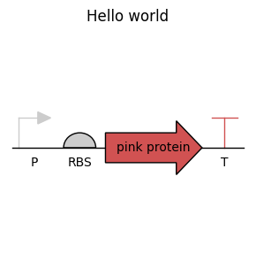
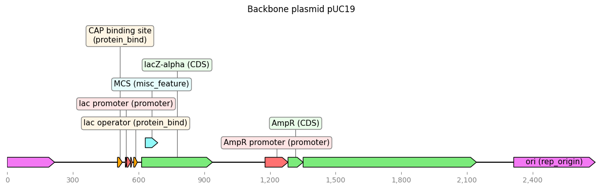
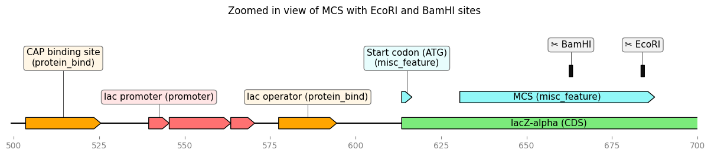
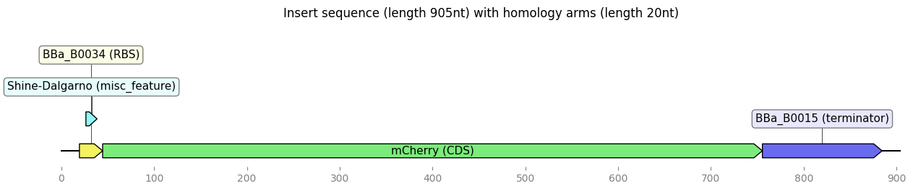
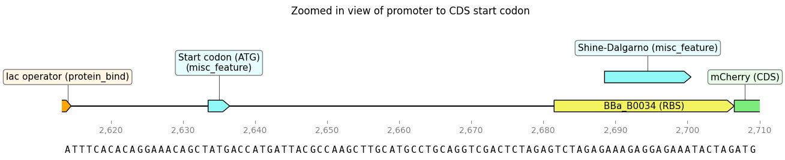
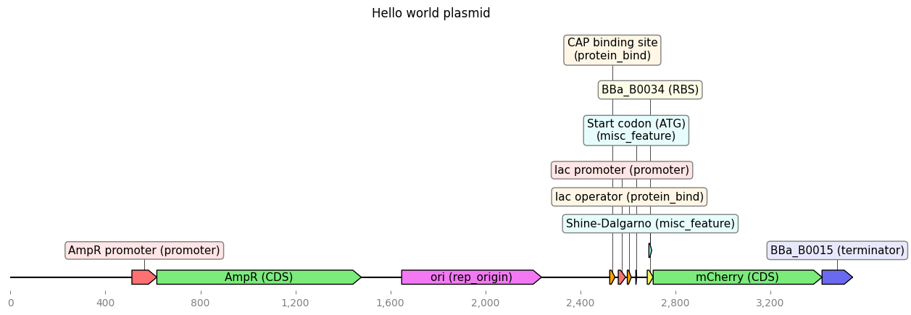

Code
# Uncomment the following line to install required packages
# %pip install biopython dnaplotlib dna_features_viewer pydnaIn this chapter we cover:
Let us install some libraries first.
# Uncomment the following line to install required packages
# %pip install biopython dnaplotlib dna_features_viewer pydnaLet’s also add a simple logger for error handling. This is a useful alternative of decorating your code with print("Error: ..."). Instead we will be using logger.error(...). This is not only more consistent in the form of the error messages, but also allows us to set the log level. For example, level debug will not be shown, while info, warning, exception, and error will be shown. Check out the documentation about logging to learn more about it.
import logging
# Simple logger setup
logger = logging.getLogger("plasmid")
logger.setLevel(logging.INFO)
logger.propagate = False
# Remove any existing handlers first
if logger.handlers:
logger.handlers.clear()
# Add a StreamHandler
sh = logging.StreamHandler()
sh.setLevel(logging.INFO)
sh.setFormatter(logging.Formatter("[%(levelname)s] %(funcName)s: %(message)s"))
logger.addHandler(sh)We would like to write our first “Hello world” program for E. coli. The language in which we will be writing is DNA as this is directly understood by the bacterium as sequence of instructions.
While in Python, a “Hello world” program is a short main.py with print("Hello world"), we cannot (yet) make an E. coli that displays the letters “Hello World”. And even if, this would be far from a very basic code - which is kind of the purpose of “hello world” programs. Let’s choose a similarly simple task that is adapted to engineered bacteria: make the bacteria display a pink color!
There are several ways to write the DNA. The most direct one is to simply write the DNA directly. Typically this is out of reach for even simple programs like our one; and thus we exclude that directly. The next, and perhaps most frequently taken approach, is to use a GUI-based DNA viewer where we can click together our DNA. This may be easy to start with, but has many downsides as we know from related tasks in computer science. While learning how to code a computer may be nice to do with drag-and-dropping code pieces, we do not even see mildly complex code written in such languages.
Following the CS approach of writing code that writes other code, in case the latter is too complex to write directly, let us do the same. We will thus use Python to write DNA.
This comes with other benefits:
Let us plot the design of our “Hello world” program first.
Let’s plot that design with the dnaplotlib library.
# %pip install biopython dnaplotlib dna_features_viewer pydna
import dnaplotlib as dpl
from matplotlib import pyplot as plt
%matplotlib inline
# Create DNA renderer
dr = dpl.DNARenderer()
renderers = dr.SBOL_part_renderers()
# --- Define design ---
p0 = {
'type': 'Promoter',
'fwd': True,
'opts': {
'label':'P',
'label_size':10,
'label_y_offset': -5,
'color':[0.8, 0.8, 0.8],
},
}
rbs0 = {
'type': 'RBS',
'fwd': True,
'opts': {
'label':'RBS',
'label_size':10,
'label_y_offset': -5,
'color':[0.8, 0.8, 0.8],
}
}
cds0 = {
'type': 'CDS',
'fwd': True,
'opts': {
'color':[0.82, 0.32, 0.32],
'label':'pink protein',
'label_size':10
},
}
t0 = {
'type': 'Terminator',
'fwd': True,
'opts': {
'color':[0.82, 0.32, 0.32],
'label':'T',
'label_y_offset': -5,
'label_size': 10
},
}
design = [
p0, rbs0, cds0, t0,
]
# --- Render DNA ---
fig, ax = plt.subplots(figsize=(3, 3))
start_pos, end_pos = dr.renderDNA(
ax=ax,
parts=design,
regs=[],
part_renderers=renderers,
reg_renderers= dr.std_reg_renderers(),
)
ax.set_xlim(start_pos - 1, end_pos + 1)
ax.set_ylim(-40, 40)
ax.set_axis_off()
plt.tight_layout()
plt.title("Hello world")
plt.show()
For our construct we need to choose a backbone, also called vector. This is the plasmid, a circular DNA, into which we will insert our construct.
We will choose a small and simple plasmid that is relatively empty and has some nice initial features. It is one of the most researched plasmids in genetic engineering and is maintained in high copy number by our host, the bacteria E. coli. The plasmid is called pUC19, starting with the usual p for plasmids and UC for University of California. You can find some basic info on it on Wikipedia.
Since we will be coding our construct, we need to get the DNA sequence pUC19. There are many websites that offer this - and many formats to get DNA. While basic formats like FASTA just contain a short description and the DNA sequence as letters ATGC..., more advanced formats allow the annotation of so called features - that is (lists of) subsequences - with a type, description, etc. One such more verbose format is GenBank (.gbk).
Assuming that we get our plasmid from addgene, let’s also get our sequence from them with the url specified below.
backbone_data = {
"url": "https://media.addgene.org/snapgene-media/v3.0.0/sequences/222046/51c2cfab-a3b4-4d62-98df-0c77ec21164e/addgene-plasmid-50005-sequence-222046.gbk",
"name": "pUC19",
}Now we are ready to fetch the sequence and show some properties with biopython.
import urllib.request
from Bio import SeqIO, SeqRecord
from Bio.Seq import Seq, MutableSeq
import os
from pathlib import Path
def get_sequence(name: str, url: str) -> SeqRecord.SeqRecord:
"""Get a DNA sequence.
Currently only supports GenBank files from URLs."""
# Download the GenBank file if not already present
sequence_path = Path("data") / f"{name}.gbk"
if not os.path.exists(sequence_path):
urllib.request.urlretrieve(url, sequence_path)
logger.info(f"Downloaded {sequence_path}")
else:
logger.info(f"{sequence_path} already exists")
# Load the plasmid using BioPython
return SeqIO.read(sequence_path, "genbank")
# Get the backbone sequence
backbone = get_sequence(backbone_data['name'], backbone_data['url'])
assert backbone.seq is not None, "Failed to load backbone sequence"
# Display basic information about the plasmid
print(f"Description: {backbone.description}")
print(f"Sequence length: {len(backbone.seq)} bp")
print(f"Number of features: {len(backbone.features)}")[INFO] get_sequence: data/pUC19.gbk already existsDescription: pUC cloning vector
Sequence length: 2686 bp
Number of features: 21Next let’s use dna_features_viewer to view the sequence. While dna_features_viewer provides some standard way of viewing sequences with a few commands, we opted for a little customization. For example, our sequence has features that are composed of multiple parts (subsequences) that may even wrap around in the plasmid. Also we would later like to draw only a subsequence. The standard plotting has some problems with this, so let’s code a small wrapper.
from dna_features_viewer import GraphicFeature, CircularGraphicRecord, GraphicRecord
from typing import TypedDict, Literal, NamedTuple
import matplotlib.pyplot as plt
from matplotlib.axes import Axes
# Define colors for feature types
feature_colors: dict[str,str] = {
"promoter": "#FF7171",
"CDS": "#7BEB7B",
"terminator": "#6A6AF1",
"RBS": "#F3F35F",
"rep_origin": "#F378F3",
"misc_feature": "#91F8F8",
"protein_bind": "#FFA500",
}
# Provide a way to add extra features
# that are not in the sequence.
class ExtraFeature(TypedDict):
start: int
end: int
strand: Literal[-1,1,0]
label: str
feature_type: str
color: str
class CroppedFeature(NamedTuple):
"""Result of cropping a feature to a display window."""
display_start: int
display_end: int
open_left: bool
open_right: bool
def _crop_feature(
start: int,
end: int,
from_to: tuple[int,int] | None,
sequence_length: int = 0
) -> CroppedFeature | None:
"""Crop a feature to the display window. Returns None if completely outside.
Parameters:
-----------
start, end : feature boundaries
from_to : display window (start, end). start > end indicates wrap-around (circular).
sequence_length : total sequence length (for wrap-around detection)
"""
assert start <= end, "Feature start must be <= end"
if from_to is None:
return CroppedFeature(start, end, False, False)
range_start, range_end = from_to
is_wrap_around = range_start > range_end
if is_wrap_around and sequence_length > 0:
# Wrap-around case: window is [range_start, sequence_length) and [0, range_end)
overlaps_first_part = not (end <= range_start or start >= sequence_length)
overlaps_second_part = not (end <= 0 or start >= range_end)
if not (overlaps_first_part or overlaps_second_part):
return None
# For wrap-around display, just return original coords
open_left = (overlaps_first_part and start < range_start) or (overlaps_second_part and start < 0)
open_right = (overlaps_first_part and end > sequence_length) or (overlaps_second_part and end > range_end)
return CroppedFeature(start, end, open_left, open_right)
else:
# Normal (non-wrap-around) case
if end <= range_start or start >= range_end:
return None
display_start = max(start, range_start)
display_end = min(end, range_end)
open_left = start < range_start
open_right = end > range_end
return CroppedFeature(display_start, display_end, open_left, open_right)
def plot_sequence(
sequence: SeqRecord.SeqRecord,
view_as_cycle: bool=False,
figure_width: int=15,
extra_features:list[ExtraFeature] | None = None,
from_to: tuple[int,int] | None = None,
plot_sequence: bool = False
) -> Axes | None:
"""Plot a sequence with features."""
if sequence.seq is None:
logger.error("required sequence.seq is missing")
return None
if view_as_cycle and from_to is not None:
logger.error("from_to parameter cannot be used for circular plasmid plots")
return None
if from_to is None:
from_to = (0, len(sequence.seq))
# Check if positive integers
assert from_to[0] >= 0 and from_to[1] >= 0, "from_to values must be non-negative integers"
# Check if not trying to plot more than sequence length
if from_to[0] <= from_to[1]:
assert (from_to[1] - from_to[0]) <= len(sequence.seq), "Display window exceeds sequence length"
else:
assert (len(sequence.seq) - from_to[0] + from_to[1]) <= len(sequence.seq), "Display window exceeds sequence length"
first_index = from_to[0]
# Handle wrap-around case: from_to[0] > from_to[1]
if from_to[0] > from_to[1]:
# Wrap-around: distance from start to end of sequence, plus start to from_to[1]
sequence_length = (len(sequence.seq) - from_to[0]) + from_to[1]
else:
sequence_length = from_to[1] - from_to[0]
# The features to plot
graphic_features: list[GraphicFeature] = []
# Add the extra features if provided
if extra_features is not None:
for extra_feature in extra_features:
graphic_features.append(
GraphicFeature(
start=extra_feature['start'],
end=extra_feature['end'],
strand=extra_feature['strand'],
label=extra_feature['label'],
feature_type=extra_feature['feature_type'],
color=extra_feature['color']
)
)
for feature in sequence.features:
feature_type: str = feature.type
# Only include features that are in the color dictionary
if feature_type in feature_colors:
location = feature.location
if location is None:
continue
strand = location.strand
color = feature_colors[feature_type]
name = f"{','.join(feature.qualifiers['label'])} ({feature.type})"
# Handle compound locations (join) - add each part separately
if hasattr(location, 'parts') and len(location.parts) > 1:
# For compound locations in circular plasmids, add each part
for i, part in enumerate(location.parts):
start = int(part.start) # type: ignore
end = int(part.end) # type: ignore
# Only add label to the first part
label_text = name if i == 0 else None
# Crop to display window
cropped = _crop_feature(start, end, from_to, len(sequence.seq))
if cropped is not None:
graphic_features.append(
GraphicFeature(
start=cropped.display_start,
end=cropped.display_end,
strand=strand,
label=label_text,
feature_type=feature_type,
color=color,
open_left=cropped.open_left,
open_right=cropped.open_right
)
)
else:
# For simple locations
start = int(location.start) # type: ignore
end = int(location.end) # type: ignore
# Crop to display window
cropped = _crop_feature(start, end, from_to, len(sequence.seq))
if cropped is not None:
graphic_features.append(
GraphicFeature(
start=cropped.display_start,
end=cropped.display_end,
strand=strand,
label=name,
feature_type=feature_type,
color=color,
open_left=cropped.open_left,
open_right=cropped.open_right
)
)
if view_as_cycle:
record = CircularGraphicRecord(sequence_length=len(sequence.seq), features=graphic_features)
else:
# For linear view, GraphicRecord will automatically crop features to the window
record = GraphicRecord(
sequence=sequence.seq,
features=graphic_features,
first_index=first_index,
sequence_length=sequence_length
)
ax, _ = record.plot(figure_width=figure_width)
if plot_sequence:
fontdict = {"size": 11, "family": "monospace"}
for i, base in enumerate(sequence.seq[first_index:first_index + sequence_length]):
ax.text(
first_index + i,
-1.5,
base,
ha="center",
va="center",
fontdict=fontdict,
)
return axGreat - we are ready to plot. Feel free to try the circular plot, too.
# view_as_cycle = True
view_as_cycle = False
ax = plot_sequence(backbone, view_as_cycle=view_as_cycle)
ax.set_title("Backbone plasmid pUC19");
We clearly see the features of two promoter regions (promoter) with the coding sequences (CDS), the origin of replication (ori), and a somewhat new feature called MCS.
What are the purposes of the two proteins that are expressed on the backbone:
The AmpR construct (promoter and CDS are annotated) is responsible for expressing a beta-lactamase enzyme. This makes the bacterium resistant to the antibiotic ampicillin (amp). See also blaTEM-1 in https://www.uniprot.org/uniprotkb/I1YAX3/entry (bla refers to beta-lactamase)
The lacZ-alpha construct (promoter and CDS annotated) is responsible for expressing the LacZ-alpha fragment. In some E. coli strains a part of the LacZ gene has been deleted: the LacZ-alpha part has been removed, while the LacZ-omega part remains in their genome. Deletions are annotated in strain names with a \(\Delta\) followed by the type of deletion. But why does the plasmid carry this fragment? This is used in blue-white screening: if grown on X-gal and in presence of IPTG, the bacteria that express this gene will be blue, while those that do not, remain white colonies on a plate. As we know from a previous lecture IPTG acts as a repressor of a repressor: it binds to the lac repressor, inhibiting lac from binding the lac operator site (shown in the above figure). Given this double repression, we can see IPTG as positively driving expression of downstream CDS.
We will also add the start codon for lacZ-alpha as a feature. This will be interesting for us later to remember where the CDS of this protein started.
from Bio.SeqFeature import SeqFeature, FeatureLocation
# Find the lacZ-alpha CDS start codon
lacz_cds = [f for f in backbone.features if f.type == "CDS" and "lacZ" in str(f.qualifiers.get("label", []))]
if not lacz_cds:
logger.error("Cannot find lacZ")
# Get the start position of the lacZ CDS
lacz_start = int(lacz_cds[0].location.start)
# Check if start codon feature already exists to avoid duplicates
start_codon_exists = any(
f.type == "misc_feature" and
"Start codon" in str(f.qualifiers.get("label", []))
for f in backbone.features
)
if not start_codon_exists:
# Add a feature for just the start codon (3 bp)
start_codon_feature = SeqFeature(
FeatureLocation(lacz_start, lacz_start + 3, strand=1),
type="misc_feature",
qualifiers={
"label": ["Start codon (ATG)"],
"note": ["lacZ-alpha start codon"]
}
)
backbone.features.append(start_codon_feature)
logger.info("Added start codon feature")
else:
logger.info("Start codon feature already exists")[INFO] <module>: Added start codon featureWe could even annotate more details in the sequence. For example, if we check out https://www.snapgene.com/plasmids/basic_cloning_vectors/lac_promoter then this even annotates the -35 and 10 regions of the lac promoter. We will not do this, here, but in general the more annotations you have in your sequence, the less likely you are to overwrite/clone into such sequences.
Also annotating is a good habit for checking the consistency. For example, we can check if the lac promoter corresponds to the one found at the source above, making us more confident about the part.
MCS stands for Multiple cloning site and is also often referred to as a polylinker. It is a region with lots of restriction sites that occur nowhere else on the plasmid. This makes it easy to cut it open and insert another fragment at this site.
As we see in the figure before, the MCS is in the middle (or rather beginning) of the lacZ-alpha CDS. This is not a coincidence, but a key idea in blue-white screening. If we cut in the MCS and successfully insert a gene there, we will destroy the original lacZ-alpha CDS. In presence of X-Gal and IPTG, the colonies with successful inserts will thus be white (unless we make them pink as we plan to) and not blue anymore.
Let’s look at the MCS feature in more detail.
# Identify the MCS feature
MSC_feature = [feature for feature in backbone.features if feature.type == "misc_feature"][0]
print(f"# MSC feature:\n{MSC_feature}")
MSC_feature_seq = MSC_feature.extract(backbone.seq)# MSC feature:
type: misc_feature
location: [631:688](+)
qualifiers:
Key: label, Value: ['MCS']
Key: note, Value: ['pUC18/19 multiple cloning site']
biopython comes with a really useful library of restriction enzymes, where we can search for restriction sites and simulate cuts. Let’s do this within the MCS for a list of frequently used enzymes.
We also code a function get_enzymes_only_in_feature to obtain a list of enzymes that cut only within the MCS and not somewhere else in the plasmid.
from Bio.Restriction import AllEnzymes, RestrictionBatch
from Bio.Restriction.PrintFormat import PrintFormat
def get_enzymes_only_in_feature(feature) -> dict[str, list[int]]:
"""Get restriction enzymes that cut within a feature."""
enzymes: dict[str, list[int]] = {}
enzymes_cutting_outside: list[str] = []
feature_start = int(feature.location.start)
feature_end = int(feature.location.end)
# Check cut sites for all enzymes
for enzyme in AllEnzymes:
name = enzyme.__name__
cut_sites = enzyme.search(backbone.seq)
for site in cut_sites:
if feature_start <= site < feature_end:
if name not in enzymes:
enzymes[name] = []
enzymes[name].append(site)
else:
enzymes_cutting_outside.append(name)
# Remove enzymes that cut outside the feature
for enzyme_name in set(enzymes_cutting_outside):
if enzyme_name in enzymes:
del enzymes[enzyme_name]
return enzymes
# Find enzymes that cut only within the MCS
enzymes_only_in_MCS = get_enzymes_only_in_feature(MSC_feature)
print(f"# Enzymes cutting only within MCS:\n{list(enzymes_only_in_MCS.keys())}\n")
# Example: Print cut sites for EcoRI
ecoRI_sites = enzymes_only_in_MCS.get("EcoRI", [])
print(f"# EcoRI cut sites within MCS:\n{ecoRI_sites}\n")
# show cuttings for some
batch_in_lab = ['EcoRI', 'BamHI', 'HindIII', 'KpnI', 'XbaI', 'PstI']
batch_safe = [ enzyme for enzyme in batch_in_lab if enzyme in enzymes_only_in_MCS ]
print(f"# Cut sites for selected safe enzymes {batch_safe}:")
restriction_batch = RestrictionBatch(batch_safe)
result = restriction_batch.search(MSC_feature_seq)
my_map = PrintFormat()
my_map.sequence = MSC_feature_seq # type: ignore
my_map.print_as("map")
my_map.print_that(result)# Enzymes cutting only within MCS:
['Sse8387I', 'HindIII', 'XbaI', 'Ama87I', 'Ecl136II', 'EcoT38I', 'BamHI', 'TspMI', 'Acc36I', 'AccI', 'FblI', 'EcoRI', 'BsiHKCI', 'SdaI', 'BscXI', 'SalI', 'BveI', 'Eco88I', 'Psp124BI', 'Acc65I', 'SbfI', 'Eco24I', 'PaeI', 'AcsI', 'Cfr9I', 'SacI', 'Asl11923II', 'Nli3877I', 'BsoBI', 'HgiJII', 'HindII', 'Eco53kI', 'BspMI', 'KpnI', 'AvaI', 'SstI', 'SpnRII', 'SmaI', 'SphI', 'BfuAI', 'Hso63373III', 'BspMAI', 'ApoI', 'Asp718I', 'Bps6700III', 'BanII', 'FriOI', 'PstI', 'BmeT110I', 'XapI', 'HincII', 'EcoICRI', 'PgaP73III', 'XmiI', 'XmaI']
# EcoRI cut sites within MCS:
[684]
# Cut sites for selected safe enzymes ['EcoRI', 'BamHI', 'HindIII', 'KpnI', 'XbaI', 'PstI']:
2 HindIII
|
| 18 PstI
| |
| | 26 XbaI
| | |
| | | 32 BamHI
| | | |
| | | | 45 KpnI
| | | | |
| | | | | 53 EcoRI
| | | | | |
AAGCTTGCATGCCTGCAGGTCGACTCTAGAGGATCCCCGGGTACCGAGCTCGAATTC
|||||||||||||||||||||||||||||||||||||||||||||||||||||||||
TTCGAACGTACGGACGTCCAGCTGAGATCTCCTAGGGGCCCATGGCTCGAGCTTAAG
1 57
Let’s mark the sites of two widely used restriction enzymes, EcoRI and BamHI, in the plasmid map and zoom into the MSC region.
ecoRI_sites = enzymes_only_in_MCS.get("EcoRI", [])
extra_features = [
ExtraFeature(
start=site,
end=site + 1,
strand=0,
label="✂️ EcoRI",
feature_type="restriction_site",
color="#0F0F0F"
) for site in ecoRI_sites]
bamHI_sites = enzymes_only_in_MCS.get("BamHI", [])
extra_features += [
ExtraFeature(
start=site,
end=site + 1,
strand=0,
label="✂️ BamHI",
feature_type="restriction_site",
color="#0F0F0F"
) for site in bamHI_sites]
# And show a crop around the MCS with the promotor upstream
ax = plot_sequence(backbone, view_as_cycle=view_as_cycle, extra_features=extra_features, from_to=(500, 700))
ax.set_title("Zoomed in view of MCS with EcoRI and BamHI sites");
We promised before that biopython cannot only find cut sites but also simulate cutting, including sticky ends with 3’ and 5’ overhangs. Let’s do this for the two enzymes to see their cutting behavior. We code a function visualize_restriction_cut for that purpose.
from Bio.Restriction import RestrictionBatch
def visualize_restriction_cut(enzyme, sequence: Seq | MutableSeq | str | None, show_context_bp: int | None = None) -> None:
"""Visualize a restriction enzyme cut with overhangs in ASCII art.
Parameters:
-----------
enzyme : RestrictionType enzyme object or str
Either the enzyme name as a string (e.g., 'EcoRI') or enzyme object
sequence : Seq or MutableSeq or str or None
The DNA sequence to visualize (will find cut sites in this sequence)
show_context_bp: int or None
If not None, then the +/- context window from the cut is shown.
"""
# If enzyme is a string, get the enzyme object
if isinstance(enzyme, str):
enzyme_batch = RestrictionBatch([enzyme])
enzyme_rt = list(enzyme_batch)[0]
else:
enzyme_rt = enzyme
site = enzyme_rt.site # type: ignore
ovhg = enzyme_rt.ovhg # type: ignore
fst5 = enzyme_rt.fst5 # type: ignore
fst3 = enzyme_rt.fst3 # type: ignore
print(f"\n✂️ {enzyme_rt.__name__}")
site_display = site[:fst5] + '|' + site[fst5:]
print(f"Cut position: {site_display}")
print(f"Overhang: {ovhg} (negative = 5' overhang, positive = 3' overhang)")
print()
# Convert to Seq if string
sequence = enzyme_rt.site if sequence is None else sequence
seq_obj = Seq(sequence) if isinstance(sequence, str) else sequence
# Find all cut sites in the sequence
cut_sites = enzyme_rt.search(seq_obj)
if not cut_sites:
print(f"No cut sites found.")
return
# Show each cut site with context
for i, cut_pos in enumerate(cut_sites, 1):
print(f"Cut site {i} at position {cut_pos}:")
# BioPython uses 1-based indexing, Python uses 0-based
# search() returns the 1-based position after the forward strand cut
# To get the 0-based site start: (search_result - 1) - fst5
site_start = cut_pos - 1 - fst5
site_end = site_start + len(site)
# Get context around the cut
if show_context_bp is not None:
context_start = max(0, cut_pos - show_context_bp)
context_end = min(len(seq_obj), cut_pos + show_context_bp)
else:
context_start = 0
context_end = len(seq_obj)
context = seq_obj[context_start:context_end]
# Position of the site start within the context
site_start_in_context = site_start - context_start
site_end_in_context = site_start_in_context + len(site)
# Get reverse complement
rev_comp = str(context.reverse_complement())
# Calculate cut positions within the context
# fwd_cut_pos: position where forward strand is cut
fwd_cut_pos = site_start_in_context + fst5
# For reverse strand: positions are mirrored because of antiparallel nature
# rev_cut_pos in the reverse complement string is calculated as:
rev_cut_pos = len(rev_comp) - (site_end_in_context + fst3)
# Split around the cuts
fwd_left = str(context[:fwd_cut_pos])
fwd_right = str(context[fwd_cut_pos:])
# For reverse strand, we need to reverse it for display (3' to 5' direction)
rev_comp_rev = rev_comp[::-1]
rev_cut_pos_rev = len(rev_comp_rev) - rev_cut_pos
rev_left = rev_comp_rev[:rev_cut_pos_rev]
rev_right = rev_comp_rev[rev_cut_pos_rev:]
# For visualization, add spaces to show the overhang gap
gap_size = abs(ovhg)
gap = ' ' * (gap_size + 1)
fwd_cut = fwd_left + gap + fwd_right
rev_cut = rev_left + gap + rev_right
print(" 5'- " + fwd_cut + " -3'")
print(" 3'- " + rev_cut + " -5'")
print()
# Using enzyme name as string with the MCS sequence
visualize_restriction_cut("EcoRI", backbone.seq, show_context_bp=30)
visualize_restriction_cut("BamHI", backbone.seq, show_context_bp=30)
# visualize_restriction_cut("SmaI", backbone.seq, show_context_bp=30)
# visualize_restriction_cut("KpnI", backbone.seq, show_context_bp=30)
✂️ EcoRI
Cut position: G|AATTC
Overhang: -4 (negative = 5' overhang, positive = 3' overhang)
Cut site 1 at position 684:
5'- CTCTAGAGGATCCCCGGGTACCGAGCTCG AATTCACTGGCCGTCGTTTTACAACGTCGTG -3'
3'- GAGATCTCCTAGGGGCCCATGGCTCGAGCTTAA GTGACCGGCAGCAAAATGTTGCAGCAC -5'
✂️ BamHI
Cut position: G|GATCC
Overhang: -4 (negative = 5' overhang, positive = 3' overhang)
Cut site 1 at position 663:
5'- GCTTGCATGCCTGCAGGTCGACTCTAGAG GATCCCCGGGTACCGAGCTCGAATTCACTGG -3'
3'- CGAACGTACGGACGTCCAGCTGAGATCTCCTAG GGGCCCATGGCTCGAGCTTAAGTGACC -5'
Both look great with similar cutting characteristics. There is no strong preference there: EcoRI is perhaps the most commonly used one in labs and BamHI is a little closer to the upstream promoter and may thus result in better efficiency in expression. Let’s choose BamHI.
from Bio.Restriction import BamHI
# Cut the (circular) backbone with BamHI
cut_backbone = BamHI.catalyze(backbone.seq)
# This results in a single fragment
assert len(cut_backbone) == 2If we cut with BamHI this will produce sticky ends with overhangs. However the Gibson Master Mix contains a 5’-exonuclease that chews back DNA from the 5’ ends. This will remove the overhangs (and even chew way further), resulting in 3’ overhangs.
For our insert to anneal to the two ends of the linearized backbone, we need to create homology arms for the insert that match the contexts of the cut sites. Typically these arms need to be of length around 20 nt for Gibson with a single (or few) inserts.
Let us first show the cut sites with blunt ends (after some chewing).
homology_length = 20
print(f"We aim for homology arms of length {homology_length}.")
print()
print("Upstream: before the cut site and after chewing back the 5' overhang")
cut_backbone_left = cut_backbone[0][-homology_length:]
print("5'- ..." + cut_backbone_left)
print("3'- ..." + cut_backbone_left.complement())
print()
chew_back_5prime = -BamHI.ovhg
cut_backbone_right = cut_backbone[1][chew_back_5prime:chew_back_5prime+homology_length]
print("Downstream: after the cut site and after chewing back the 5' overhang")
print(cut_backbone_right + "... -3'")
print(cut_backbone_right.complement() + "... -5'")We aim for homology arms of length 20.
Upstream: before the cut site and after chewing back the 5' overhang
5'- ...CCTGCAGGTCGACTCTAGAG
3'- ...GGACGTCCAGCTGAGATCTC
Downstream: after the cut site and after chewing back the 5' overhang
CCCGGGTACCGAGCTCGAAT... -3'
GGGCCCATGGCTCGAGCTTA... -5'While we show blunt ends, the 5’ ends will be chewed back even further. For the insert, we need to complement the template (= bottom) strand. Thus we can use the bases from -homology_length to 0 (relative to the cut) of the coding (=top) strand for the left arm.
Likewise, the right cut starts after the overhang for homology_length nt.
left_homology = cut_backbone_left
assert len(left_homology) == homology_length
right_homology = cut_backbone_right
assert len(right_homology) == homology_length
print("Homology arms that we need to add to the insert:")
print(left_homology, " + (insert) + ", right_homology)Homology arms that we need to add to the insert:
CCTGCAGGTCGACTCTAGAG + (insert) + CCCGGGTACCGAGCTCGAATRibosome binding sites (RBSes) are DNA sequences that are transcribed to RNA that binds tightly to part of the Ribosome. By analyzing many such sequences and looking at the statistics of most common bases, so-called consensus sequences have been obtained. For the RBS this is the famous Shine-Dalgarno sequence. In E. coli the RNA sequence is AGGAGGU (corresponding to AGGAGGT in DNA).
Once we have chosen our RBS, when designing our insert, we need to know how to add our CDS after the RBS. Luckily this has been studied. An important parameter for the translation initiation rate is the spacing between the RBS and the start codon of the CDS. A systematic study was done by Hongyun Chen, Matthew Bjerknes, Ravindra Kumar, Ernest Jay, NAR 1994. They found that 5 nt was optimal.
Side note: How does the Ribosome determine the open reading frame (ORF)? It scans for a start codon like
AUGon the RNA (ATGin DNA) which then sets the reading frame (determining the codons). However, central to this is the distance of the Shine-Dalgarno to the possible start of the ORF. As noted before, 5 nt is optimal.
All these findings have been systematically included into a tool by Salis, Mirsky, Voigt (Nat Biotechnol. 2009). Besides binding of the Shine-Dalgarno sequence and spacing, the authors also identify the standby site upstream of the Shine-Dalgarno sequence as central for the translation initiation rate. Figure 1 in their article shows the standby site, the Shine-Dalgarno sequence, spacing, and the start codon nicely in relation to the Ribosome that interacts with them.
We will choose a relatively strong RBS that is frequently used in synthetic designs: it is part BBa_B0034 from https://parts.igem.org/Ribosome_Binding_Sites/Prokaryotic/Constitutive/Community_Collection.
It already contains the standby site, the Shine-Dalgarno sequence, spacing, and the start codon: TCTAGAG + AAAGAGGAGAAA + TACTAG + ATG
Let’s create an annotated sequence rbs for the RBS.
from Bio.SeqRecord import SeqRecord
rbs_standby = Seq("TCTAGAG")
rbs_shine_dalgarno = Seq("AAAGAGGAGAAA")
rbs_spacer = Seq("TACTAG")
rbs_seq = rbs_standby + rbs_shine_dalgarno + rbs_spacer
rbs = SeqRecord(rbs_seq, name="RBS_BBa_B0034")
rbs_features = [
SeqFeature(
FeatureLocation(0, len(rbs_seq), strand=1),
type="RBS",
qualifiers={
"label": ["BBa_B0034"],
"note": ["new RBS"]
}
),
SeqFeature(
FeatureLocation(len(rbs_standby), len(rbs_standby + rbs_shine_dalgarno), strand=1),
type="misc_feature",
qualifiers={
"label": ["Shine-Dalgarno"],
"note": ["Shine-Dalgarno sequence"]
}
),
]
rbs.features.extend(rbs_features)We want our E. coli to be pink. A promising CDS is the mCherry CDS sequence, that we find, for example, at https://www.ncbi.nlm.nih.gov/protein/AAV52164.1
Let’s get this sequence, annotate it, and check translation: it should start with the usual M (or Met) for Methionine and stop with the stop codon shown as *. While most translation processes start with this amino acid, it is often cleaved after translation, with the final protein not starting with it.
from Bio import Entrez, SeqIO
from Bio.SeqFeature import SeqFeature, FeatureLocation
from pprint import pprint
accession = "AY678264" # mCherry gene
email = "contact@biodis.co"
with Entrez.efetch(db="nucleotide", id=accession, rettype="fasta", retmode="text", email=email) as handle:
cds = SeqIO.read(handle, "fasta")
# Add a CDS feature annotation
cds_feature = SeqFeature(
FeatureLocation(0, len(cds.seq), strand=1), # Start to end, forward strand
type="CDS",
qualifiers={
"label": ["mCherry"],
"product": ["mCherry fluorescent protein"],
"note": ["Red fluorescent protein"]
}
)
cds.features.append(cds_feature)
print("Translation")
print('DNA:', cds.seq)
print('Protein:', cds.seq.translate())Translation
DNA: ATGGTGAGCAAGGGCGAGGAGGATAACATGGCCATCATCAAGGAGTTCATGCGCTTCAAGGTGCACATGGAGGGCTCCGTGAACGGCCACGAGTTCGAGATCGAGGGCGAGGGCGAGGGCCGCCCCTACGAGGGCACCCAGACCGCCAAGCTGAAGGTGACCAAGGGTGGCCCCCTGCCCTTCGCCTGGGACATCCTGTCCCCTCAGTTCATGTACGGCTCCAAGGCCTACGTGAAGCACCCCGCCGACATCCCCGACTACTTGAAGCTGTCCTTCCCCGAGGGCTTCAAGTGGGAGCGCGTGATGAACTTCGAGGACGGCGGCGTGGTGACCGTGACCCAGGACTCCTCCCTGCAGGACGGCGAGTTCATCTACAAGGTGAAGCTGCGCGGCACCAACTTCCCCTCCGACGGCCCCGTAATGCAGAAGAAGACCATGGGCTGGGAGGCCTCCTCCGAGCGGATGTACCCCGAGGACGGCGCCCTGAAGGGCGAGATCAAGCAGAGGCTGAAGCTGAAGGACGGCGGCCACTACGACGCTGAGGTCAAGACCACCTACAAGGCCAAGAAGCCCGTGCAGCTGCCCGGCGCCTACAACGTCAACATCAAGTTGGACATCACCTCCCACAACGAGGACTACACCATCGTGGAACAGTACGAACGCGCCGAGGGCCGCCACTCCACCGGCGGCATGGACGAGCTGTACAAGTAA
Protein: MVSKGEEDNMAIIKEFMRFKVHMEGSVNGHEFEIEGEGEGRPYEGTQTAKLKVTKGGPLPFAWDILSPQFMYGSKAYVKHPADIPDYLKLSFPEGFKWERVMNFEDGGVVTVTQDSSLQDGEFIYKVKLRGTNFPSDGPVMQKKTMGWEASSERMYPEDGALKGEIKQRLKLKDGGHYDAEVKTTYKAKKPVQLPGAYNVNIKLDITSHNEDYTIVEQYERAEGRHSTGGMDELYK*Indeed we find the start codon ATG at the beginning being translated to M and the stop codon at the end.
We will choose a strong double terminator BBa_B0015 from https://parts.igem.org/Part:BBa_B0015
terminator_seq = Seq("ccaggcatcaaataaaacgaaaggctcagtcgaaagactgggcctttcgttttatctgttgtttgtcggtgaacgctctctactagagtcacactggctcaccttcgggtgggcctttctgcgtttata")
terminator = SeqRecord(terminator_seq, name="BBa_B0015")
terminator_feature = SeqFeature(
FeatureLocation(0, len(terminator_seq), strand=1),
type="terminator",
qualifiers={
"label": ["BBa_B0015"],
"note": ["Double terminator"]
}
)
terminator.features.append(terminator_feature)We are now ready to construct the DNA sequence from the parts via:
insert = left_homology + rbs + cds + terminator + right_homologyAnd let’s look at the insert as a whole
print("Final insert sequence with homology arms:")
# print in junks of 60 bases for better readability
for i in range(0, len(insert.seq), 60):
print(insert.seq[i:i+60].upper())
# and show the features on the insert sequence with the homology arms
ax = plot_sequence(insert, view_as_cycle=False)
ax.set_title(f"Insert sequence (length {len(insert.seq)}nt) with homology arms (length {homology_length}nt)");Final insert sequence with homology arms:
CCTGCAGGTCGACTCTAGAGTCTAGAGAAAGAGGAGAAATACTAGATGGTGAGCAAGGGC
GAGGAGGATAACATGGCCATCATCAAGGAGTTCATGCGCTTCAAGGTGCACATGGAGGGC
TCCGTGAACGGCCACGAGTTCGAGATCGAGGGCGAGGGCGAGGGCCGCCCCTACGAGGGC
ACCCAGACCGCCAAGCTGAAGGTGACCAAGGGTGGCCCCCTGCCCTTCGCCTGGGACATC
CTGTCCCCTCAGTTCATGTACGGCTCCAAGGCCTACGTGAAGCACCCCGCCGACATCCCC
GACTACTTGAAGCTGTCCTTCCCCGAGGGCTTCAAGTGGGAGCGCGTGATGAACTTCGAG
GACGGCGGCGTGGTGACCGTGACCCAGGACTCCTCCCTGCAGGACGGCGAGTTCATCTAC
AAGGTGAAGCTGCGCGGCACCAACTTCCCCTCCGACGGCCCCGTAATGCAGAAGAAGACC
ATGGGCTGGGAGGCCTCCTCCGAGCGGATGTACCCCGAGGACGGCGCCCTGAAGGGCGAG
ATCAAGCAGAGGCTGAAGCTGAAGGACGGCGGCCACTACGACGCTGAGGTCAAGACCACC
TACAAGGCCAAGAAGCCCGTGCAGCTGCCCGGCGCCTACAACGTCAACATCAAGTTGGAC
ATCACCTCCCACAACGAGGACTACACCATCGTGGAACAGTACGAACGCGCCGAGGGCCGC
CACTCCACCGGCGGCATGGACGAGCTGTACAAGTAACCAGGCATCAAATAAAACGAAAGG
CTCAGTCGAAAGACTGGGCCTTTCGTTTTATCTGTTGTTTGTCGGTGAACGCTCTCTACT
AGAGTCACACTGGCTCACCTTCGGGTGGGCCTTTCTGCGTTTATACCCGGGTACCGAGCT
CGAAT
Next comes the big step: we will simulate a Gibson assembly and check if the construct is what we expected. Let’s code this with the help of pydna.
import pydna
from pydna.assembly2 import Assembly
from pydna.dseqrecord import Dseqrecord
backbone_dseq = Dseqrecord(backbone, name="backbone", circular=True)
cutting = backbone_dseq.cut(BamHI)
backbone_linearized_dseq = cutting[0]
# The insert
insert_dseq = Dseqrecord(insert, name="insert", circular=False)
fragments = [
backbone_linearized_dseq,
insert_dseq,
]
asm = Assembly(fragments, limit=10)
products = asm.assemble_circular()
final_construct = products[0]Of particular interest is the sequence from the promoter to the start codon of the new CDS. We will show this and check if it looks unexpected.
promoters = [ f for f in backbone_linearized_dseq.features if f.type == "promoter" ]
promoter = promoters[1]
print(promoter)
ax = plot_sequence(final_construct, view_as_cycle=view_as_cycle, from_to=(2560+54, 2710), plot_sequence=True)
ax.set_title("Zoomed in view of promoter to CDS start codon");type: promoter
location: [2564:2595](+)
qualifiers:
Key: label, Value: ['lac promoter']
Key: note, Value: ['promoter for the E. coli lac operon']

We see that between the lac operator and our RBS there is already the original start codon from the CDS that we cut. That means there was probably also an RBS between the lac operator and this ATG. Ribosomes may thus already start translating there. While this is not a clean design to just add our RBS and ATG afterwards, we will go for this as this is whats possible with cutting in the MCS. For a “Hello world” with the goal to be as simple as possible, we did this deliberately, though.
You will work on a, more complex, clean workaround in the problem session.
Here it is, ready for the lab, our “Hello world” plasmid as a whole.
ax = plot_sequence(final_construct, view_as_cycle=False)
ax.set_title("Hello world plasmid");
License: © 2025 Matthias Függer and Thomas Nowak. Licensed under CC BY-NC-SA 4.0.